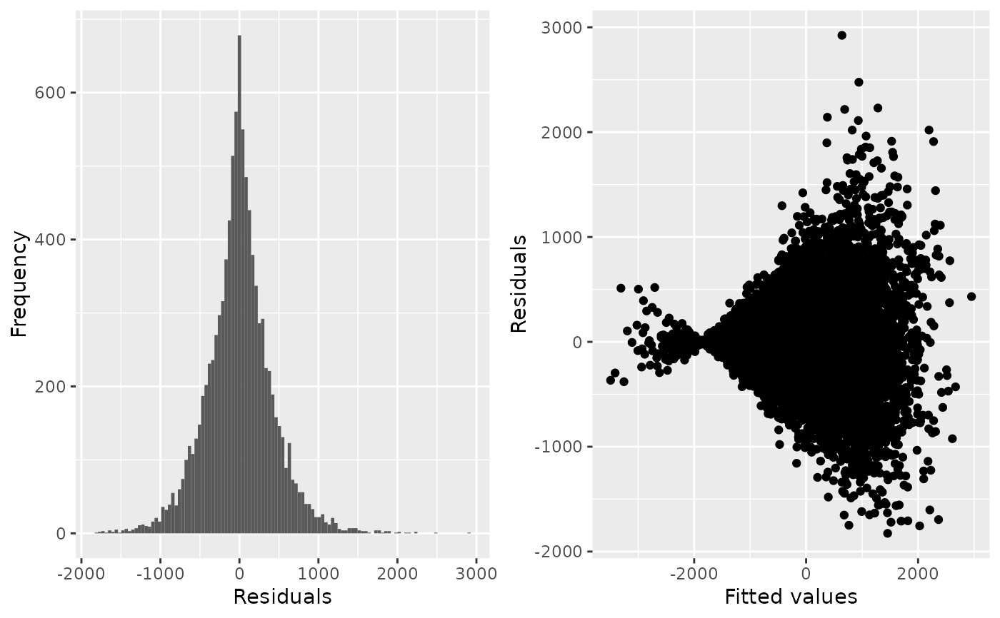
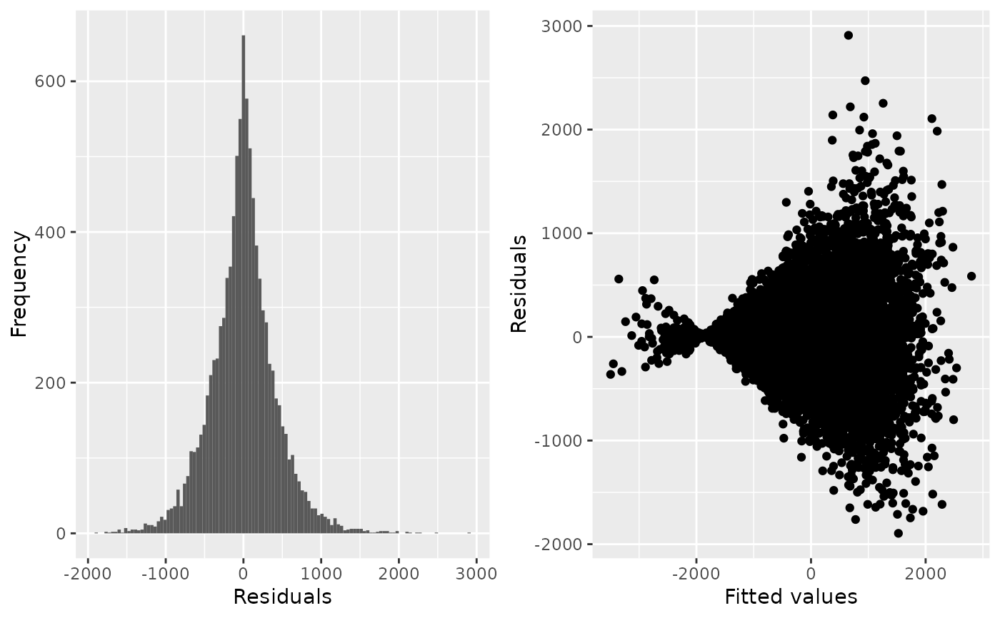

Check the fit of a regression model used to estimate EVPPI or EVSI
Source:R/check_regression.R
check_regression.RdProduces diagnostic plots and summaries of regression models used to estimate EVPPI or EVSI, mainly in order to check that the residuals have mean zero.
Arguments
- x
Output from
evppiorevsi. The argumentcheck=TRUEmust have been used when callingevppiorevsi, to allow the regression model objects fromgamorearthto be preserved. (This is not done by default, since these objects can be large.).attr(x, "models")cont- pars
Parameter (or parameter group) whose EVPPI calculation is to be checked. This should be in the
parscomponent of the object returned byevppi. Only relevant ifxis the result of anevppicalculation. By default, the first calculation shown inxis checked.- n
Sample size whose EVSI calculation is to be checked. This should be in the
ncomponent of the object returned byevsi. Only relevant ifxis the result of anevsicalculation.- comparison
Only relevant if there are more than two treatments in the decision model. Different regression models are then used for the comparisons of different treatments with the baseline treatment.
comparisonis an integer identifying which of these models is checked.- outcome
"costs"or"effects". Only relevant ifoutputswas in cost-effectiveness format when callingevppiorevsi, hence different regressions are used for costs and effects. By default,outcome="costs"is used, so that the regression for costs is checked.- plot
If
FALSE, only numerical statistics are returned, and a plot is not made.
Value
Where possible, an appropriate statistic is returned that allows the regression
model to be compared with other regression models implemented using the same method
but with different assumptions. For method="gam",
this is Akaike's information criterion (AIC).
For method="earth", this is the generalised cross-validation statistic
gcv. Currently not implemented for other methods.
Details
For VoI estimation, the key thing we are looking for is that the residuals have mean zero, hence that the mean of the model output is represented well by the regression function of the model input parameters. It should not matter if the variance of the residuals is non-constant, or non-normally distributed.
Models produced with method="gam" are summarised using gam.check.
Models produced method="earth" are summarised using plot.earth.
For any regression model, if fitted() and residuals() methods are defined for those models,
then a histogram of the residuals and a scatterplot of residuals against fitted values is produced.
Examples
pars <- c("p_side_effects_t1", "p_side_effects_t2")
evtest <- evppi(chemo_nb, chemo_pars, pars=pars, check=TRUE)
evtest
#> pars evppi
#> 1 p_side_effects_t1,p_side_effects_t2 333.4516
check_regression(evtest)

#> $AIC
#> [1] 149411.3
#>
## with no interaction term
evtest2 <- evppi(chemo_nb, chemo_pars, pars=pars,
gam_formula="s(p_side_effects_t1)+s(p_side_effects_t2)",
check=TRUE)
evtest2
#> pars evppi
#> 1 p_side_effects_t1,p_side_effects_t2 334.059
check_regression(evtest2)

#> $AIC
#> [1] 149408.8
#>
## doesn't make much difference to the estimate
## fit is OK in either case